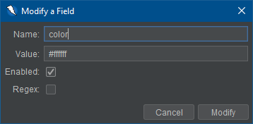

This Value Generator extension allows for the custom configuration of values used in sites/apps based on field/input names.
Note: The word "Field" is used throughout this help documentation interchangeably with parameter or input.
With this add-on the user can create new fields for inputs that they wish to control the value of. Additionally, the user can modify any existing field's name and value to fit the fields that they are trying to customize/control. Any field can also be disabled or removed by the user so that the custom values are not used. Field names, values, enabled state, and regex status will be stored even after a ZAP session has concluded.
The add-on provides a set of default field names and patterns that may be found in an app/system and a corresponding value for each default field. These default values can be disabled, modified, and deleted if the user desires.
The Value Generator can be configured thought ZAP's Options. Selecting the Value Generator tab will display a table with all existing inputs that are currently defined. An example is shown below.

To define additional input values the Add button can be clicked. This will bring up a dialog for the user to provide field information.

Please take note of the following when adding a new field:
The add-on allows the user to modify the values and names of existing fields. This can be done by selecting the field that you wish to modify and clicking on the Modify button.
When modifying a field the user is constrained by the same rules as creating a new one. The most common constraint when modifying a field is that the name cannot be the same as an existing field. (i.e. No duplicate fields)
The user can remove fields at any time. To do so simply select the field that you wish to remove and click on the Remove button. Please note that you will be prompted to confirm removal before proceeding unless the Remove without Confirmation box is checked.
A user may find that they do not want to define everything, but rather define a select few within the expected input.
Any field that is not defined in the Value Generator add-on will use a ZAP default value that is generated to match each field type.(For example: A text field will have the value "ZAP".)
A number of statistics are exposed via the add-on for add, modify, and remove operations.
In the following examples {name} will be the actual name of the Value Generator field.